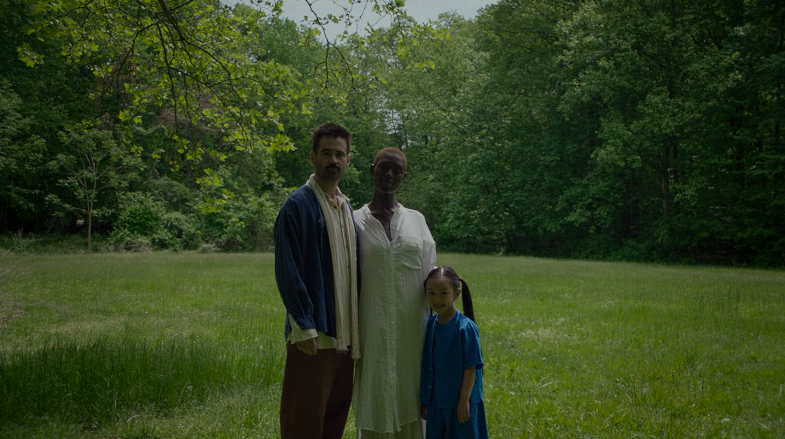

EEAAO: FILLED WITH SO MUCH HEART
Watched On: 5th March, 2022
Rating:
Rating:
I cry a lot when I'm watching movies.
Characters expressing love in one form or the other always gets me, and I find myself tearing up because I want the same, pure love they show onscreen. This, however, was not the case with After Yang.
The way Yang's memories were first shown, the love you could feel in the scenes... I started crying almost immediately. This time though, something was different. It was not because I wanted to be loved like that, but because I wanted to be Yang.

After Yang's absolutely beautiful visuals will take your breath away.
This was my first Kogonada film, and he did such an amazing job of translating the love onscreen to the viewers. When I was watching it, I wanted to have a heart as big as Yang, to love as deeply as him, and to treasure every tiny moment just like he did. This is a movie that takes you on a beautiful journey, one you don't quite expect when you press play.
Sci-fi isn't usually quiet. It's mostly loud, uses all these technical terms, and gives you a completely different universe where more than half of the names are made with a random combination of letters. After Yang doesn't have much of any of the characteristics I mentioned, and yet it is one of the best sci-fi movies I've ever seen. Kogonada's direction is wonderful, and the cinematography and soundtrack made me fall in love with this film over and over again.

11-year old Emma Tjandrawidjaja gives a heartfelt big-screen debut performance.
Everyone in the cast did an excellent job. Colin Farrell, Jodie Turner-Smith, Justin Min, and Haley Lu Richardson were all brilliant, and Malea Emma Tjandrawidjaja deserves a special shoutout for her amazing performance as Mika. One of my favourite surprises about the movie was Sarita Choudhary being in it, and as always, she did so much justice to her role.
Some of the most beautiful shots in the film come from when Colin Farrell is seated in his sofa, scouring through Yang's memories. The concept of how robots percieve us is portrayed through a series of memory storages, where Yang stores the most valuable memories in his mind, is some of the most beautiful cinematography I've ever seen.

After Yang is one of the most beautiful movies I've ever watched.
I will be thinking about this for quite some time, it was just too good.